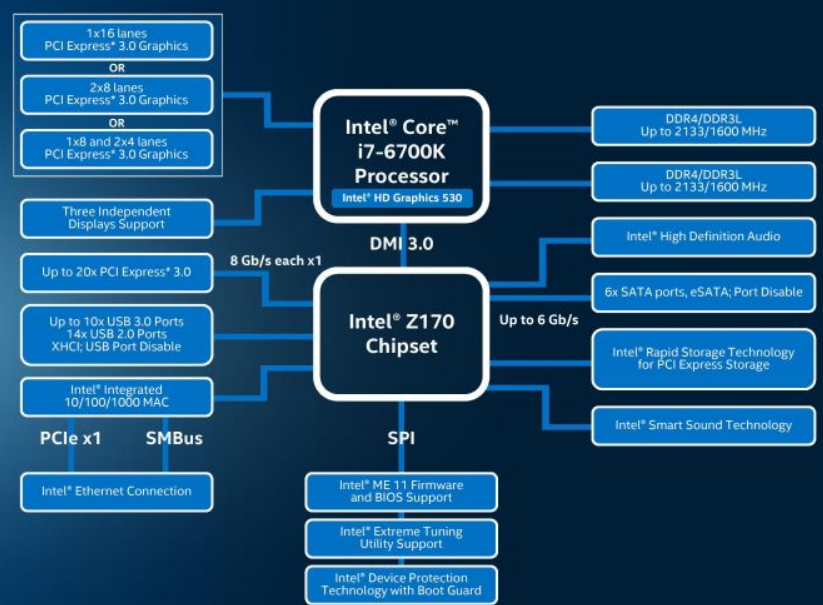

宏观来看CPU如何与设备通讯
一台电脑的主要部分就是CPU、GPU、内存、硬盘、以及各种外围设备（包括USB、以太网、无线网、声卡等），其实我从很早开始就很好奇这些东西都是怎么个连接法，仅仅是学了一点点计算机组成还不足以解释心里的困惑🤣。所以才有这篇文章的折腾。
以Intel的i7-6700K这个CPU的框架为例，其框图如下。

- 左上角，CPU是通过PCIE（Peripheral Component Interconnect Express)接口连接GPU。
- 左下角，连接到3个独立的显示控制上
- 右侧，有两个内存通道，可以兼容DDR3或者DDR4。
- 下侧，CPU通过DMI3.0总线连接南桥，并扩展连接到一系列的外围设备上。
1、PCIE总线
PCIE总线带宽
CPU需要直接连接的就是显卡和内存，因为这两者都是需要非常高的带宽来传输大量的数据。显卡走的就是16通道的PCIE总线 ，拿现在最主流的PCIE3.0总线而言，其速度为8Gbps16（也就是1GBps16），所以总线一共的带宽为128Gbps。

PCIE总线拆分
但是看到图中CPU左侧连接的可以是1*16lanes，也可以是2*8lanes，还可以是1*8 and 2*4，这就是我们常说的16或者8+8以及8+4+4。不同的CPU不一样，一般来说Intel的直连CPU的PCIE只有16个通道，可以支持8+8或者8+4+4甚至8+4+2+2，这就要看CPU的型号支持了。
那为啥会有把PCIE的16个通道拆分的需求呢？我猜测应该就是因为有的显卡性能没那么牛逼，不需要那么高的带宽来传输数据。比如GPU的处理数据的能力只有50Gbps，那么给他8个通道的PCIE3.0通道GPU的路子还是很宽敞。
所以多余的通道可以拿来干点别的事情啊，比如接两个显卡它不香吗，或者多接一个M2的SSD硬盘也不错啊，总不能闲着浪费这个CPU的资源啊，所以就可以通过拆分PCIE通道来实现这个目的。这个就需要主板设计的帮助啦。比如主板上有两个PCIE3.0的插槽，两个都只用8个lanes，这样就可以同时插入两个显卡或者说插入一个显卡加一个SSD啦，听起来很不错的样子。虽然说高端显卡可能会受到这种情形的瓶颈限制，但是中低端显卡仍然可以“全力发挥”。而这种接口仍然是需要兼容16lanes的封装（虽然只有8个lanes的线是在用的）。

以一个实际的主板举例哈。红色框出来的就是3个PCIE3.016的接口不过他们的带宽是不一样的，从上往下依次是x16，x8，x4。绿色的就是PCIE1的插槽，显卡也是可以插在这里的，只不过性能就GG了。那么假如同时插最上面的两个PCIE*16卡槽，会发生什么？
由于PCIE的一共就16个通道，因此第一个插槽就会降速到x8，所以最后的结果也就是两个x8啦。所以也不是说一定双显卡交火速度就快，一个高端显卡带一个低端显卡，说不定慢的那个显卡直接把高端显卡带宽拉低到8GBps😂，人间惨剧。
2、内存
说完CPU左边的事情，我们来说CPU右边。也就是主板的内存。
在CPU处理数据的时候，就是从硬盘中取数据，然后进行各种操作。但是CPU的速度非常快，而普通的存储设备读写速度都比较慢，比如机械硬盘（采用磁盘和机械读盘结构，速度最慢）或者SSD（使用NAND FLASH），这两种的速度都很难跟上CPU的速度（不过现在已经有最新的SSD速度能够达到早期的CPU的处理速度的能力了）。
计算机组成告诉我们，为了平衡两个之间的带宽差就需要用到内存（DRAM，Dynamic Random Access Memory）。我们以现在的主流的DDR3的带宽为例，其速度为
- DDR3 1066：8.5 GB/s
- DDR3 1333：10.6 GB/s
- DDR3 1600：12.8 G MB/s
- DDR3 1866：14.9 G MB/s
内存则通过内存管理单元与CPU进行通讯，而内存管理单元目前已经做到CPU内部了（以前是北桥来完成）。如下图所示，6700k支持两个内存通道连接，一个通道可以连接一个内存条（叫做1DPC, 1 DIMM Per Channel)，也可以连接两个内存条（2DPC，2 DIMM Per Channel)

如下左图的红色框所示就是一个双通道四插槽的内存条接口。右侧则是一个四通道八插槽的主板

两通道2DPC

四通道2DPC
3、南桥(South Bridge)
看过维修厮的视频看多了，肯定还是要来讲一讲三板斧中的淦南桥。下图中的Chipset就是南桥，与CPU连接就是通过DMI总线连接，DMI3.0的带宽基本相当于PCIE3.0的4 lanes的速度，也就是4GBps（32Gbps）。通过南桥，又会把这个带宽细分出新的PCIE接口、USB接口、网卡、声卡、SATA这些，也会与BIOS通过SPI通讯协议连接。
由于这些外围设备对带宽的需求相对来说没有显卡和内存条那么高，所以通过DMI总线基本就能搞定这些数据啦。而南桥就相当于电脑除了CPU之外的第二个脑子，管理一大箩筐的外设设备。这样CPU也能专心搞自己的高速数据处理，不用隔三差五的被类似于USB这些小弟打扰。
总结
找了一张I7的Die的图

最右侧的就是上面提到的连接PCIE接口的、连接DMI接口的部分。下面的就是内存处理单元，这两部分可以说就是CPU控制与外部连接的接口啦。所以如果仅仅从宏观上来看，CPU的原理是不是已经一目了然了呢！